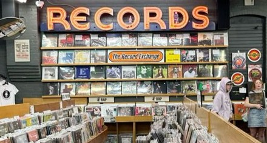

Nossa loja nasceu do desejo de reviver a magia dos álbuns físicos, resgatando o conceito das capas, encartes e da experiência de ouvir música de forma completa e atenta. Aqui, cada disco e CD tem história e importância.
Trabalhamos com uma seleção especial de discos de vinil e CDs que vai do rock clássico ao jazz, do pop à música brasileira, sempre prezando pela qualidade e pela autenticidade. Sejam lançamentos ou raridades, novos ou usados, nosso acervo é cuidadosamente escolhido para agradar à todos.
Mais do que uma loja, somos um ponto de encontro de quem ama música. Um espaço onde você pode descobrir sons, trocar ideias e reviver memórias.
Na nossa loja, a música está presente em cada detalhe. oferecemos uma experiência completa para quem valoriza a boa música e o formato físico.
Nosso acervo é atualizado constantemente com:
Cada disco e CD que chega até a gente é escolhido com muito carinho. Nós escutamos, avaliamos, pesquisamos — tudo pra garantir que você leve pra casa algo especial de verdade. Pode ser um clássico já usado ou um lançamento novinho em folha, mas o cuidado é o mesmo. Trabalhamos com selos confiáveis, edições emocionante, e aqueles achados que transformam qualquer coleção. Se você está atrás de uma raridade ou só quer trocar uma ideia sobre música, é só entrar em contato com nós!